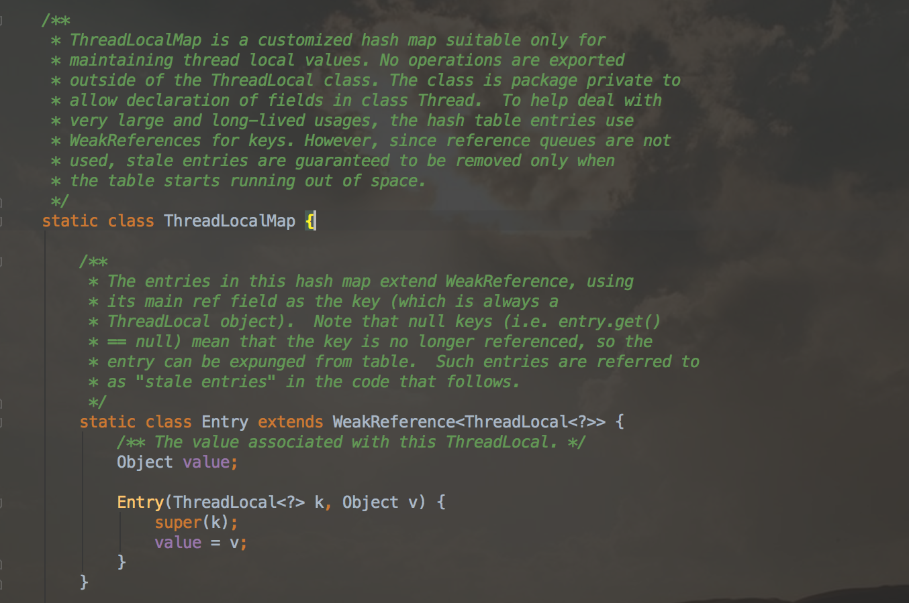
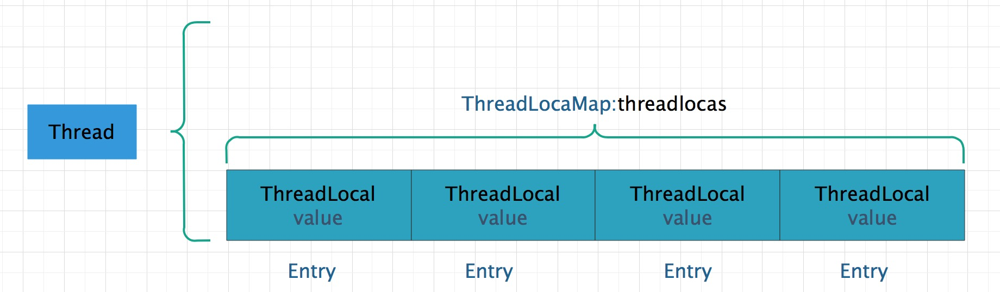
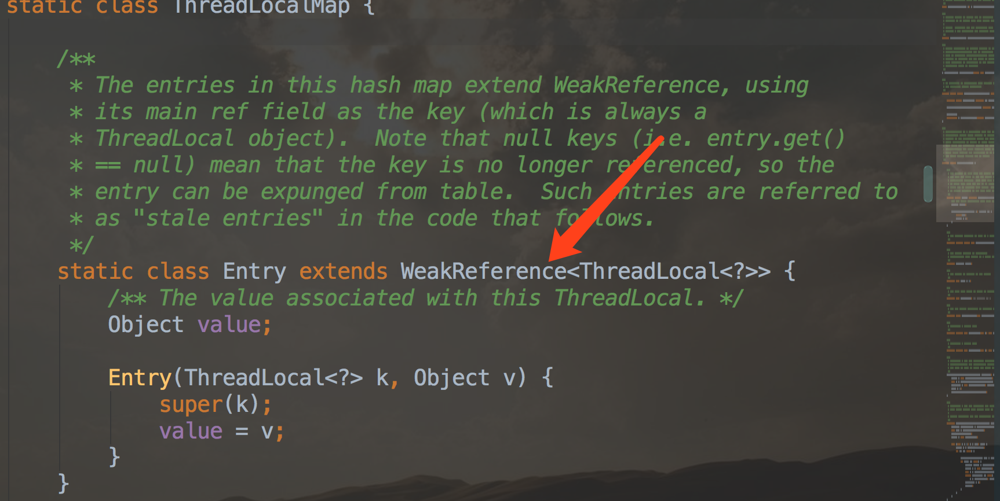

- AQS 万字图文全面解析.md.html
- Docker 镜像构建原理及源码分析.md.html
- ElasticSearch 小白从入门到精通.md.html
- JVM CPU Profiler技术原理及源码深度解析.md.html
- JVM 垃圾收集器.md.html
- JVM 面试的 30 个知识点.md.html
- Java IO 体系、线程模型大总结.md.html
- Java NIO浅析.md.html
- Java 面试题集锦（网络篇）.md.html
- Java-直接内存 DirectMemory 详解.md.html
- Java中9种常见的CMS GC问题分析与解决（上）.md.html
- Java中9种常见的CMS GC问题分析与解决（下）.md.html
- Java中的SPI.md.html
- Java中的ThreadLocal.md.html
- Java线程池实现原理及其在美团业务中的实践.md.html
- Java魔法类：Unsafe应用解析.md.html
- Kafka 源码阅读笔记.md.html
- Kafka、ActiveMQ、RabbitMQ、RocketMQ 区别以及高可用原理.md.html
- MySQL · 引擎特性 · InnoDB Buffer Pool.md.html
- MySQL · 引擎特性 · InnoDB IO子系统.md.html
- MySQL · 引擎特性 · InnoDB 事务系统.md.html
- MySQL · 引擎特性 · InnoDB 同步机制.md.html
- MySQL · 引擎特性 · InnoDB 数据页解析.md.html
- MySQL · 引擎特性 · InnoDB崩溃恢复.md.html
- MySQL · 引擎特性 · 临时表那些事儿.md.html
- MySQL 主从复制 半同步复制.md.html
- MySQL 主从复制 基于GTID复制.md.html
- MySQL 主从复制.md.html
- MySQL 事务日志(redo log和undo log).md.html
- MySQL 亿级别数据迁移实战代码分享.md.html
- MySQL 从一条数据说起-InnoDB行存储数据结构.md.html
- MySQL 地基基础：事务和锁的面纱.md.html
- MySQL 地基基础：数据字典.md.html
- MySQL 地基基础：数据库字符集.md.html
- MySQL 性能优化：碎片整理.md.html
- MySQL 故障诊断：一个 ALTER TALBE 执行了很久，你慌不慌？.md.html
- MySQL 故障诊断：如何在日志中轻松定位大事务.md.html
- MySQL 故障诊断：教你快速定位加锁的 SQL.md.html
- MySQL 日志详解.md.html
- MySQL 的半同步是什么？.md.html
- MySQL中的事务和MVCC.md.html
- MySQL事务_事务隔离级别详解.md.html
- MySQL优化：优化 select count().md.html
- MySQL共享锁、排他锁、悲观锁、乐观锁.md.html
- MySQL的MVCC（多版本并发控制）.md.html
- QingStor 对象存储架构设计及最佳实践.md.html
- RocketMQ 面试题集锦.md.html
- SnowFlake 雪花算法生成分布式 ID.md.html
- Spring Boot 2.x 结合 k8s 实现分布式微服务架构.md.html
- Spring Boot 教程：如何开发一个 starter.md.html
- Spring MVC 原理.md.html
- Spring MyBatis和Spring整合的奥秘.md.html
- Spring 帮助你更好的理解Spring循环依赖.md.html
- Spring 循环依赖及解决方式.md.html
- Spring中眼花缭乱的BeanDefinition.md.html
- Vert.x 基础入门.md.html
- eBay 的 Elasticsearch 性能调优实践.md.html
- 不可不说的Java“锁”事.md.html
- 互联网并发限流实战.md.html
- 从ReentrantLock的实现看AQS的原理及应用.md.html
- 从SpringCloud开始，聊微服务架构.md.html
- 全面了解 JDK 线程池实现原理.md.html
- 分布式一致性理论与算法.md.html
- 分布式一致性算法 Raft.md.html
- 分布式唯一 ID 解析.md.html
- 分布式链路追踪：集群管理设计.md.html
- 动态代理种类及原理，你知道多少？.md.html
- 响应式架构与 RxJava 在有赞零售的实践.md.html
- 大数据算法——布隆过滤器.md.html
- 如何优雅地记录操作日志？.md.html
- 如何设计一个亿级消息量的 IM 系统.md.html
- 异步网络模型.md.html
- 当我们在讨论CQRS时，我们在讨论些神马？.md.html
- 彻底理解 MySQL 的索引机制.md.html
- 最全的 116 道 Redis 面试题解答.md.html
- 有赞权限系统(SAM).md.html
- 有赞零售中台建设方法的探索与实践.md.html
- 服务注册与发现原理剖析（Eureka、Zookeeper、Nacos）.md.html
- 深入浅出Cache.md.html
- 深入理解 MySQL 底层实现.md.html
- 漫画讲解 git rebase VS git merge.md.html
- 生成浏览器唯一稳定 ID 的探索.md.html
- 缓存 如何保证缓存与数据库的双写一致性？.md.html
- 网易严选怎么做全链路监控的？.md.html
- 美团万亿级 KV 存储架构与实践.md.html
- 美团点评Kubernetes集群管理实践.md.html
- 美团百亿规模API网关服务Shepherd的设计与实现.md.html
- 解读《阿里巴巴 Java 开发手册》背后的思考.md.html
- 认识 MySQL 和 Redis 的数据一致性问题.md.html
- 进阶：Dockerfile 高阶使用指南及镜像优化.md.html
- 铁总在用的高性能分布式缓存计算框架 Geode.md.html
- 阿里云PolarDB及其共享存储PolarFS技术实现分析（上）.md.html
- 阿里云PolarDB及其共享存储PolarFS技术实现分析（下）.md.html
- 面试最常被问的 Java 后端题.md.html
- 领域驱动设计在互联网业务开发中的实践.md.html
- 领域驱动设计的菱形对称架构.md.html
- 高效构建 Docker 镜像的最佳实践.md.html
Java中的ThreadLocal
前言
面试的时候被问到ThreadLocal的相关知识，没有回答好（奶奶的，现在感觉问啥都能被问倒），所以我决定先解决这几次面试中都遇到的高频问题，把这几个硬骨头都能理解的透彻的说出来了，感觉最起码不能总是一轮游。
ThreadLocal介绍
ThreadLocal是JDK1.2开始就提供的一个用来存储线程本地变量的类。ThreadLocal中的变量是在每个线程中独立存在的，当多个线程访问ThreadLocal中的变量的时候，其实都是访问的自己当前线程的内存中的变量，从而保证的变量的线程安全。
我们一般在使用ThreadLocal的时候都是为了解决线程中存在的变量竞争问题。其实解决这类问题，通常大家也会想到使用synchronized来加锁解决。
例如在解决SimpleDateFormat的线程安全的时候。SimpleDateFormat是非线程安全的，它里面无论的是format()方法还是parse()方法，都有使用它自己内部的一个Calendar类的对象，format方法是设置时间，parse()方法里面是先调用Calendar的clear()方法，然后又调用了Calendar的set()方法（赋值），如果一个线程刚调用了set()进行赋值，这个时候又来了一个线程直接调用了clear()方法，那么这个parse()方法执行的结果就会有问题的。 解决办法一 将使用SimpleDateformat的方法加上synchronized，这样虽然保证了线程安全，但却降低了效率，同一时间只有一个线程能使用格式化时间的方法。
private static SimpleDateFormat simpleDateFormat = new SimpleDateFormat("yyyy-MM-dd HH:mm:ss");
public static synchronized String formatDate(Date date){
return simpleDateFormat.format(date);
}
解决办法二 将SimpleDateFormat的对象，放到ThreadLocal里面，这样每个线程中都有一个自己的格式对象的副本了。互不干扰，从而保证了线程安全。
private static final ThreadLocal<SimpleDateFormat> simpleDateFormatThreadLocal = ThreadLocal.withInitial(() -> new SimpleDateFormat("yyyy-MM-dd HH:mm:ss"));
public static String formatDate(Date date){
return simpleDateFormatThreadLocal.get().format(date);
}
ThreadLocal的原理
我们先看一下ThreadLocal是怎么使用的。
ThreadLocal<Integer> threadLocal99 = new ThreadLocal<Integer>();
threadLocal99.set(3);
int num = threadLocal99.get();
System.out.println("数字:"+num);
threadLocal99.remove();
System.out.println("数字Empty:"+threadLocal99.get());
运行结果：
数字:3
数字Empty:null
使用起来很简单，主要是将变量放到ThreadLocal里面，在线程执行过程中就可以取到，当执行完成后在remove掉就可以了，只要没有调用remove()当前线程在执行过程中都是可以拿到变量数据的。 因为是放到了当前执行的线程中，所以ThreadLocal中的变量值只能当前线程来使用，从而保证的了线程安全（当前线程的子线程其实也是可以获取到的）。
来看一下ThreadLocal的set()方法源码
public void set(T value) {
// 获取当前线程
Thread t = Thread.currentThread();
// 获取ThreadLocalMap
ThreadLocal.ThreadLocalMap map = getMap(t);
// ThreadLocalMap 对象是否为空，不为空则直接将数据放入到ThreadLocalMap中
if (map != null)
map.set(this, value);
else
createMap(t, value); // ThreadLocalMap对象为空，则先创建对象，再赋值。
}
我们看到变量都是存放在了ThreadLocalMap这个变量中的。那么ThreadLocalMap又是怎么来的呢？
ThreadLocalMap getMap(Thread t) {
return t.threadLocals;
}
public class Thread implements Runnable {
... ...
/* ThreadLocal values pertaining to this thread. This map is maintained
* by the ThreadLocal class. */
ThreadLocal.ThreadLocalMap threadLocals = null;
... ...
}
通过上面的源码，我们发现ThreadLocalMap变量是当前执行线程中的一个变量，所以说，ThreadLocal中存放的数据其实都是放到了当前执行线程中的一个变量里面了。也就是存储在了当前的线程对象里了，别的线程里面是另一个线程对象了，拿不到其他线程对象中的数据，所以数据自然就隔离开了。
那么ThreadLocalMap是怎么存储数据的呢？ ThreadLocalMap 是ThreadLocal类里的一个内部类，虽然类的名字上带着Map但却没有实现Map接口，只是结构和Map类似而已。  ThreadLocalMap内部其实是一个Entry数组，Entry是ThreadLocalMap中的一个内部类，继承自WeakReference，并将ThreadLocal类型的对象设置为了Entry的Key，以及对Key设置成弱引用。 ThreadLocalMap的内部数据结构，就大概是这样的key,value组成的Entry的数组集合。  和真正的Map还是有区别的，没有链表了，这样在解决key的hash冲突的时候措施肯定就和HashMap不一样了。 一个线程中是可以创建多个ThreadLocal对象的，多个ThreadLocal对象就会存放多个数据，那么在ThreadLocalMap中就会以数组的形式存放这些数据。 我们来看一下具体的ThreadLocalMap的set()方法的源码
/**
* Set the value associated with key.
* @param key the thread local object
* @param value the value to be set
*/
private void set(ThreadLocal<?> key, Object value) {
// We don't use a fast path as with get() because it is at
// least as common to use set() to create new entries as
// it is to replace existing ones, in which case, a fast
// path would fail more often than not.
Entry[] tab = table;
int len = tab.length;
// 定位在数组中的位置
int i = key.threadLocalHashCode & (len-1);
for (Entry e = tab[i];
e != null;
e = tab[i = nextIndex(i, len)]) {
ThreadLocal<?> k = e.get();
// 如果当前位置不为空，并且当前位置的key和传过来的key相等，那么就会覆盖当前位置的数据
if (k == key) {
e.value = value;
return;
}
// 如果当前位置为空，则初始化一个Entry对象，放到当前位置。
if (k == null) {
replaceStaleEntry(key, value, i);
return;
}
}
// 如果当前位置不为空，并且当前位置的key也不等于要赋值的key ，那么将去找下一个空位置，直接将数据放到下一个空位置处。
tab[i] = new Entry(key, value);
int sz = ++size;
if (!cleanSomeSlots(i, sz) && sz >= threshold)
rehash();
}
我们从set()方法中可以看到，处理逻辑有四步。
- 第一步先根据Threadlocal对象的hashcode和数组长度做与运算获取数据应该放在当前数组中的位置。
- 第二步就是判断当前位置是否为空，为空的话就直接初始化一个Entry对象，放到当前位置。
- 第三步如果当前位置不为空，而当前位置的Entry中的key和传过来的key一样，那么直接覆盖掉当前位置的数据。
- 第四步如果当前位置不为空，并且当前位置的Entry中的key和传过来的key 也不一样，那么就会去找下一个空位置，然后将数据存放到空位置（数组超过长度后，会执行扩容的）；
在get的时候也是类似的逻辑，先通过传入的ThreadLocal的hashcode获取在Entry数组中的位置，然后拿当前位置的Entry的Key和传入的ThreadLocal对比，相等的话，直接把数据返回，如果不相等就去判断和数组中的下一个值的key是否相等。。。
private Entry getEntry(ThreadLocal<?> key) {
int i = key.threadLocalHashCode & (table.length - 1);
Entry e = table[i];
if (e != null && e.get() == key)
return e;
else
return getEntryAfterMiss(key, i, e);
}
/**
* Version of getEntry method for use when key is not found in
* its direct hash slot.
*
* @param key the thread local object
* @param i the table index for key's hash code
* @param e the entry at table[i]
* @return the entry associated with key, or null if no such
*/
private Entry getEntryAfterMiss(ThreadLocal<?> key, int i, Entry e) {
Entry[] tab = table;
int len = tab.length;
while (e != null) {
ThreadLocal<?> k = e.get();
if (k == key)
return e;
if (k == null)
expungeStaleEntry(i);
else
i = nextIndex(i, len);
e = tab[i];
}
return null;
}
我们上文一直说，ThreadLocal是保存在单个线程中的数据，每个线程都有自己的数据，但是实际ThreadLocal里面的真正的对象数据，其实是保存在堆里面的，而线程里面只是存储了对象的引用而已。 并且我们在使用的时候通常需要在上一个线程执行的方法的上下文共享ThreadLocal中的变量。 例如我的主线程是在某个方法中执行代码呢，但是这个方法中有一段代码时新创建了一个线程，在这个线程里面还使用了我这个正在执行的方法里面的定义的ThreadLocal里面的变量。这个时候，就是需要从新线程里面调用外面线程的数据，这个就需要线程间共享了。这种子父线程共享数据的情况，ThreadLocal也是支持的。 例如：
ThreadLocal threadLocalMain = new InheritableThreadLocal();
threadLocalMain.set("主线程变量");
Thread t = new Thread() {
@Override
public void run() {
super.run();
System.out.println( "现在获取的变量是 =" + threadLocalMain.get());
}
};
t.start();
运行结果：
现在获取的变量是 =主线程变量
上面这样的代码就能实现子父线程共享数据的情况，重点是使用InheritableThreadLocal来实现的共享。 那么它是怎么实现数据共享的呢？ 在Thread类的init()方法中有这么一段代码：
if (inheritThreadLocals && parent.inheritableThreadLocals != null)
this.inheritableThreadLocals =ThreadLocal.createInheritedMap(parent.inheritableThreadLocals);
这段代码的意思是，在创建线程的时候，如果当前线程的inheritThreadLocals变量和父线程的inheritThreadLocals变量都不为空的时候，会将父线程的inheritThreadLocals变量中的数据，赋给当前线程中的inheritThreadLocals变量。
ThreadLocal的内存泄漏问题
上文我们也提到过，ThreadLocal中的ThreadLocalMap里面的Entry对象是继承自WeakReference类的，说明Entry的key是一个弱引用。

弱引用是用来描述那些非必须的对象，弱引用的对象，只能生存到下一次垃圾收集发生为止。当垃圾收集器开始工作，无论当前内存是否足够，都会回收掉只被弱引用关联的对象。
这个弱引用还是ThreadLocal对象本身，所以一般在线程执行完成后，ThreadLocal对象就会变成null了，而为null的弱引用对象，在下一次GC的时候就会被清除掉，这样Entry的Key的内存空间就被释放出来了，但是Entry的value还在占用的内存，如果线程是被复用的（例如线程池中的线程），后面也不使用ThreadLocal存取数据了，那么这里面的value值会一直存在，最终就导致了内存泄漏。
防止内存泄漏的办法就是在每次使用完ThreadLocal的时候都去执行以下remove()方法，就可以把key和value的空间都释放了。
那既然容易产生内存泄漏，为什么还要设置成弱引用的呢？
如果正常情况下应该是强引用，但是强引用只要引用关系还在就一直不会被回收，所以如果线程被复用了，那么Entry中的Key和Value都不会被回收，这样就造成了Key和Value都会发生内存泄漏了；
但是设置成弱引用，当ThreadLocal对象，没有被强引用后，就会被回收，回收后，Entry中的key就会被设置成null了，如果Thread被重复使用，只要还会用ThreadLocal存储数据，那么就会调用ThreadLocal的，set、get等方法，在调用set、get、等方法的时候，是会扫描Entry中key为null的数据的。 当发现Entry中，有key为null的数据时，会将value也设置为null，这样就将value的值也进行了回收，能进一步防止内存泄漏了，并且在进行rehash的时候，也是先清除掉key是null的数据后，如果空间还不够，才进行扩容的。
但是虽然将key设置了弱引用，但是如果一个线程被重复利用，执行完任务后，再也不使用ThreadLocal了，那么最后value值会一直存在，最终也是会导致内存泄漏的，所以使用ThreadLocal的时候，最后一定要执行remove()方法。